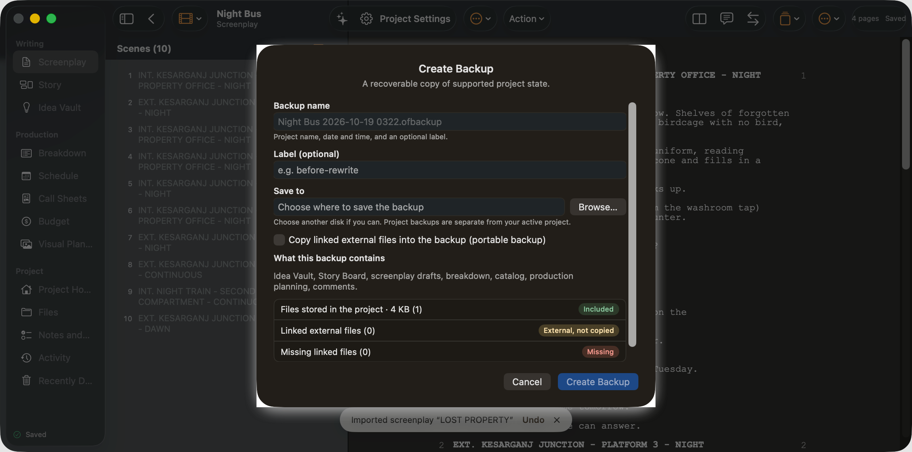

Project: Night Bus. Switch or manage projects (menubutton, project-menu)
Hide Sidebar (button, sidebar-toggle)
All Projects (button, close-project)
Element (menubutton, element-picker)
Screenplay: LOST PROPERTY. Switch screenplay (menubutton, screenplay-picker)
Compare (button, compare-button)
Comments (0) (button, comments-button)

Imported screenplay “LOST PROPERTY”WritingScreenplayStoryIdea VaultProductionBreakdownScheduleCall SheetsBudgetVisual PlanningProjectProject HomeFilesNotes and TasksActivityRecently DeletedSavedScenes (10)4 pagesSavedNight BusScreenplayCreate BackupA recoverable copy of supported project state.Backup nameProject name, date and time, and an optional label.Label (optional)Save toChoose another disk if you can. Project backups are separate from your active project.What this backup containsIdea Vault, Story Board, screenplay drafts, breakdown, catalog, production planning, comments.Files stored in the project · 4 KB (1), IncludedLinked external files (0), External, not copiedMissing linked files (0), MissingCreate BackupA recoverable copy of supported project state.Backup nameProject name, date and time, and an optional label.Label (optional)Save toChoose another disk if you can. Project backups are separate from your active project.What this backup containsIdea Vault, Story Board, screenplay drafts, breakdown, catalog, production planning, comments.Files stored in the project · 4 KB (1), IncludedLinked external files (0), External, not copiedMissing linked files (0), Missing